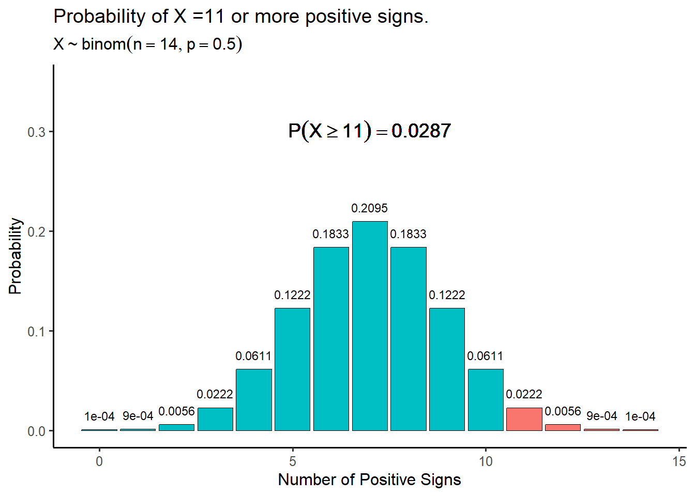

Warm Up:
You get the following MPG scores:
MPG: \(30,28,32,26,33,25,28,30\)
Consider the following \(95\%\) confidence interval for the null hypothesis \(\mu = 35\), \([32.67, 37.32]\). Does the actual gas mileage for these cars deviate significantly from \(35\)? Why or why not?
The hypothesis tests that we have learned up to this point are called parametric tests. Parametric tests make assumptions about the population distribution from which the data are sampled. For example:
The test for a proportion assumes that either the sample size is large enough and that the “success” and “failures” are well balanced so that the population distribution of \(X\) is approximately normal
The test for a population mean explicitly assumes that the population distribution of \(X\) is normal
Another group of hypothesis tests are said to be non-parametric. Non-parametric tests make few or no assumptions about the underlying distribution of the data. Still, both types of analyses assume the data are generated from a randomization procedure and that the observations in the data are independent and come from the same distribution. However, in non-parametric statistics, the distribution can be any distribution.
Advantages of Non-parametric tests
They may be the only alternative when sample sizes are very small (unless the population distribution is known exactly, but this is almost never the case)
They make few assumptions about the population distribution of the data
They are advantages when the data represent crude measurements such as subjective ratings/rankings (e.g, Likert responses)
They often have simpler computations and interpretations than parametric tests
Disadvantages of Non-parametric tests
The sign test is a non-parametric significance test that is typically used for paired observations such as data gathered from a matched-pairs designs. For example, consider an experiment where individuals are weighed before and after a treatment with a weight loss drug and the difference in weight is recorded. Such data is appropriate for the sign test.
The sign test is relatively under-powered compared to the other parametric tests we have learned about. However, it is very flexible and makes almost no assumptions about the data or it’s population distribution. The sign test is especially useful when data arise from crude measurements or when observations have a ranked order such as movie ratings or taste scores, to name a few examples.
To demonstrate the use of the sign test, consider the following data from a study comparing the ratings of husbands and wives on the perceived relative influence of each member of the couple on a major financial decision. The ratings were given as a number between \(1-7\) with \(1\) indicating wife-dominated decision making and \(7\) indicating husband-dominated decision making.
| Couple | Husband | Wife | Difference | Sign |
|---|---|---|---|---|
| 1 | 5 | 3 | 2 | \(+\) |
| 2 | 4 | 3 | 1 | \(+\) |
| 3 | 6 | 4 | 2 | \(+\) |
| 4 | 6 | 5 | 1 | \(+\) |
| 5 | 3 | 3 | 0 | |
| 6 | 2 | 3 | -1 | \(-\) |
| 7 | 5 | 2 | 3 | \(+\) |
| 8 | 3 | 3 | 0 | |
| 9 | 1 | 2 | -1 | \(-\) |
| 10 | 4 | 3 | 1 | \(+\) |
| 11 | 5 | 2 | 3 | \(+\) |
| 12 | 4 | 2 | 2 | \(+\) |
| 13 | 4 | 5 | -1 | \(-\) |
| 14 | 7 | 2 | 5 | \(+\) |
| 15 | 5 | 5 | 0 | |
| 16 | 5 | 3 | 2 | \(+\) |
| 17 | 5 | 1 | 4 | \(+\) |
The second to last column “Difference” gives the difference in rating between the husbands rating and wifes rating for each couple. The last column denoted “Sign” indicates whether each difference was positive or negative. Positive differences indicate that husband perceives themselves are more dominating in decision making while negative signs indicated that the wife perceives themselves as more dominating. In this example, ignoring differences of zero, there are a total of \(14\) signs and \(11\) of them are positive. Let \(p\) be the probability that a given sign is positive and consider the following pair of hypotheses:
\[H_0: p = 0.5; \ \ H_A: p \neq 0.5 \]
The null hypothesis indicates that the presence of a positive or negative sign is essentially random while the alternative indicates that positive signs are reflective of either a positive or negative difference in opinion between the husband and wife in each couple. Under the null hypothesis, the number of positive signs is a binomial random variable with probability \(p = 0.5\).
\[P(s) = \frac{n!}{s!(n-s)!}p^s(1-p)^{n-s} \]
where \(n\) is the total number of signs and \(s\) is the number of positive signs. Thus the sampling distribution of the number of positive signs is a binomial distribution

Recall that the \(p\)-value of a significance test is the probability of observing a value as or more extreme than the test statistic. In the case of the sign test, the test statistic is the number of positive signs and the \(p\)-value is the probability of observing more or fewer signs, depending the nature of the alternative hypothesis. For a test of the hypotheses given above, the \(p\)-value is the probability of getting \(11\) or more positive signs multiplied by \(2\) because it is a two-tailed test. This gives
\[p\text{-value} = 2\times P(S \geq 11 | H_0 True) = \sum_{k = 11}^n \frac{n!}{k!(n-k)!}p^k(1-p)^{n-k} \] \[ = 2(0.0222+0.0056+0.0009+0.0001) = 2(0.0287) = 0.0574 \]
Assuming a significance level of \(5\%\), we would fail reject the null hypothesis, and we would conclude that the probability of a positive sign is not significantly different than \(p = 0.5\). In the original context of the test, this indicates that husbands and wives do not differ significantly in their perceived relative influence in major financial decision making.
The five steps of the sign test are given below:
Assumptions: data are matched pairs
State the null and alternative hypotheses. Note that the hypothesis are defined in terms of the probability of a positive sign. Usually the null is that \(p = 0.5\) i.e positive and negative signs are equally likely/ random.
Compute the differences and sign of each difference for all pairs of observations. The test statistic is the number of positive signs.
Compute the \(p\)-value from a binomial distribution
Make a decision
Like we have seen before with tests for \(p\) and \(\mu\) the sign test can be right, left or two-tailed tests.
| Alternative Hypothesis \(H_A\) | \(p\)-value |
|---|---|
| \(H_A: p > 0.5\) | \(P(S \geq s | H_0 True)\) |
| \(H_A: p < 0.5\) | \(P(S \leq s | H_0 True)\) |
| \(H_A: p \neq 0.5\) | \(2\times P(S \geq s | H_0 True)\) |
We can also tabulate the probabilities for different outcomes of the sign test to produce a table like the \(Z\) or \(t\) table we have used previously. The table below gives the cumulative probabilities for different combinations of positive and total signs. The columns represent the total number of signs and the rows represent the number of positive signs.
| Number of positive signs | 5 | 6 | 7 | 8 | 9 | 10 | 11 | 12 | 13 | 14 | 15 |
|---|---|---|---|---|---|---|---|---|---|---|---|
| 0 | 0.03125 | 0.01563 | 0.00781 | 0.00391 | 0.00195 | 0.00098 | 0.00049 | 0.00024 | 0.00012 | 6e-05 | 3e-05 |
| 1 | 0.15625 | 0.09375 | 0.05469 | 0.03125 | 0.01758 | 0.00977 | 0.00537 | 0.00293 | 0.00159 | 0.00085 | 0.00046 |
| 2 | 0.3125 | 0.23438 | 0.16406 | 0.10938 | 0.07031 | 0.04395 | 0.02686 | 0.01611 | 0.00952 | 0.00555 | 0.0032 |
| 3 | 0.3125 | 0.3125 | 0.27344 | 0.21875 | 0.16406 | 0.11719 | 0.08057 | 0.05371 | 0.03491 | 0.02222 | 0.01389 |
| 4 | 0.15625 | 0.23438 | 0.27344 | 0.27344 | 0.24609 | 0.20508 | 0.16113 | 0.12085 | 0.08728 | 0.0611 | 0.04166 |
| 5 | 0.03125 | 0.09375 | 0.16406 | 0.21875 | 0.24609 | 0.24609 | 0.22559 | 0.19336 | 0.1571 | 0.12219 | 0.09164 |
| 6 | 0 | 0.01563 | 0.05469 | 0.10938 | 0.16406 | 0.20508 | 0.22559 | 0.22559 | 0.20947 | 0.18329 | 0.15274 |
| 7 | 0 | 0 | 0.00781 | 0.03125 | 0.07031 | 0.11719 | 0.16113 | 0.19336 | 0.20947 | 0.20947 | 0.19638 |
| 8 | 0 | 0 | 0 | 0.00391 | 0.01758 | 0.04395 | 0.08057 | 0.12085 | 0.1571 | 0.18329 | 0.19638 |
| 9 | 0 | 0 | 0 | 0 | 0.00195 | 0.00977 | 0.02686 | 0.05371 | 0.08728 | 0.12219 | 0.15274 |
| 10 | 0 | 0 | 0 | 0 | 0 | 0.00098 | 0.00537 | 0.01611 | 0.03491 | 0.0611 | 0.09164 |
| 11 | 0 | 0 | 0 | 0 | 0 | 0 | 0.00049 | 0.00293 | 0.00952 | 0.02222 | 0.04166 |
| 12 | 0 | 0 | 0 | 0 | 0 | 0 | 0 | 0.00024 | 0.00159 | 0.00555 | 0.01389 |
| 13 | 0 | 0 | 0 | 0 | 0 | 0 | 0 | 0 | 0.00012 | 0.00085 | 0.0032 |
| 14 | 0 | 0 | 0 | 0 | 0 | 0 | 0 | 0 | 0 | 6e-05 | 0.00046 |
| 15 | 0 | 0 | 0 | 0 | 0 | 0 | 0 | 0 | 0 | 0 | 3e-05 |
Practice: The Sign Test - A group of \(12\) fly fisherman are testing two types of flies to determine which one is more effective at catching trout in the Selway River. Each fly fisherman makes \(10\) casts with each fly lure and records the number of trout that are caught. Use the table below to conduct a two-sided sign test at the \(\alpha = 0.05\) significance level:
| Fisherman | Fly1 | Fly2 | Difference | Sign |
|---|---|---|---|---|
| 1 | 1 | 2 | -1 | \(-\) |
| 2 | 1 | 3 | -2 | \(-\) |
| 3 | 2 | 1 | 1 | \(+\) |
| 4 | 5 | 4 | 1 | \(+\) |
| 5 | 2 | 0 | 2 | \(+\) |
| 6 | 2 | 2 | 0 | |
| 7 | 2 | 1 | 1 | \(+\) |
| 8 | 4 | 4 | 0 | |
| 9 | 5 | 1 | 4 | \(+\) |
| 10 | 1 | 1 | 0 | |
| 11 | 1 | 0 | 1 | \(+\) |
| 12 | 4 | 1 | 3 | \(+\) |
The null hypothesis is \(H_0: p_0 = 0.5\) the probability of positive sign is \(50\%\). The alternative hypothesis is that one of the flies catches more fish \(H_A: p\neq p_0\). There are \(s = 7\) positive signs out of a total of 9 total signs. The \(p\)-value for the two sided test is given by
\[\text{$p$-value} = 2\times P(S\geq s| H_0 \ \text{True}) = 2\left[\sum_{k = 7}^9 \frac{9!}{k!(9-k)!}0.5^k(1-0.5)^{9-k}\right]\]
\[ = 2\times[0.0703+0.0175+0.0019] = 2(0.0898) \approx 0.179 \]
Our \(p\)-value is greater than \(\alpha\) and thus we fail to reject the null hypothesis and conclude the the number of fish caught with each fly lure is not significantly different (i.e the probability of a positive sign is not significantly different than \(p = 0.5\))
Up to this point in the course we have learned how to conduct inference on a single sample. Analyzing a single variable is referred to as univariate analysis. However, in statistics we are often interested in comparing two different groups across some measurement. This involves exploring the relationship between two variables: An explanatory variable which defines the groups of interests and a response variable which measures the outcome of interest from each group. Examples include exploring the relationship between gender and height or between treatment group (i.e placebo group and treatment group) and patient outcome.
Statistical analyses that explore the relationship between two variables are called bivariate analyses. Just as we had univariate significance tests for a population mean and population proportion, we also have well defined significance tests for the inference of two variables - these are often called two-sample tests because we treat the observations in each group as a sample from a distinct population. Thus two-sample tests are used to compare the population parameters of two different populations.
In bivariate analyses, we have to be considerate of whether the samples blonging to the two groups are dependent or independent.
independent samples - occur when the observations in one sample are independent (have no statistical association) of the observations in the other sample. This most always the case in experiements that use randomization to allocate subjects to treatment groups
dependent samples - occur when the observations in one sample are associated with the observations in another sample – this can happen when the same subjects are used for each sample such as matched pair designs
Dependent samples cause some difficulties for bivariate analyses of two groups. This is because computing the standard error under dependent samples can be a very complex computation (more on this later).
Comparative studies, such as comparing two related but distinct groups, are by far the most common type of statistical analysis. We often want to compare the proportions of individuals from two groups that share some characteristic. Examples include:
Proportion of college students who binge drink among high and low GPA students
Proportion of religious voters among Republicans and Democrats.
These problems concern the comparison of two populations (high and low GPA students; Republicans and Democrats). The two groups being compared are called population 1 and population 2, and the two population proportions are called \(p_1\) and \(p_2\). For two population proportions we will consider only the case of two independent samples. The data consist of two independent simple random samples of sizes \(n_1\) and \(n_2\) from populations 1 and 2, respectively. The proportion of observations having the characteristic of interest in each sample estimates the corresponding population proportion. The notation is outlined in the table below:
| Population | Population Proportion | Sample Size | Count of Successes | Sample Proportion |
|---|---|---|---|---|
| 1 | \(p_1\) | \(n_1\) | \(X_1\) | \(\hat{p}_1 = X_1/n_1\) |
| 2 | \(p_2\) | \(n_2\) | \(X_2\) | \(\hat{p}_2 = X_2/n_2\) |
We compare two population proportions by looking at the difference between them.
\[D = \hat{p}_1 - \hat{p}_2 \]
When the samples from both groups are sufficiently large, the sampling distribution of the difference in proportion \(D\) is approximately normal. Like we saw before with the univariate case, inference procedures for comparing proportions are based on \(z\), the normal approximation, and on standardizing the difference \(D\). The difference \(D\) is an unbiased estimator of the population difference \(p_1 - p_2\). Moreover, by the linearity of variance, the variance of the difference is the sum of the population variances:
\[\sigma^2_D = \frac{p_1(1-p_1)}{n_2}+\frac{p_2(1-p_2)}{n_2} \]
Thus when the sample sizes are sufficiently large \(D\) follows a normal distribution
\[D \sim N\left(p_1 - p_2, \sqrt{\frac{p_1(1-p_1)}{n_2}+\frac{p_2(1-p_2)}{n_2}}\right)\]
As we did before we will start by constructing a confidence interval for the population difference \(D\).
the point estimate is \[D = \hat{p}_1 - \hat{p}_2 \] with standard error
\[ SE_D = \sqrt{\frac{\hat{p}_1(1-\hat{p}_1)}{n_2}+\frac{\hat{p}_2(1-\hat{p}_2)}{n_2}}\]
this gives the margin of error
\[m = z\times SE_D \]
putting all together the \((1-\alpha)\%\) confidence interval for the population difference in proportion is
\[ (\hat{p}_1 - \hat{p}_2) \pm Z_{1-\alpha/2} \times SE_D\]
The critical value \(Z_{1-\alpha/2}\) is the same critical value that we used in the one-sample case
Example: Aspirin and Heart Attacks - A large-scale randomized experiment investigated the effect of regular aspirin use on myocardial infarctions (i.e., heart attacks)(Physicians’ Health Study Research Group* 1989). The results are summarized below:
| Group | Population Proportion | Sample Size | Patients Who Experienced Heart Attacks | Patients Who did Not Experience A Heart Attack |
|---|---|---|---|---|
| Aspirin | \(p_1\) | \(11037\) | \(104\) | \(10933\) |
| Placebo | \(p_2\) | \(11034\) | \(189\) | \(10845\) |
Construct a \(95\%\) confidence interval for the difference in proportions of patients experiencing heart attacks between those taking aspirin and those taking the placebo
Understand the Problem:
We have two groups: Aspirin and Placebo.
We want to estimate the difference in proportions of patients experiencing heart attacks between these two groups.
We have sample data for each group, including the sample proportions and sample sizes.
Calculate Sample Proportions:
Sample proportion for Aspirin group: \(\hat{p}_1 = \frac{104}{11037} = 0.0094\)
Sample proportion for Placebo group: \(\hat{p}_2 = \frac{189}{11034} = 0.0171\)
Calculate the Standard Error:
\[ SE = \sqrt{\frac{0.0094 (1-0.0094)}{11037} + \frac{0.0171(1-0.0171)}{11034}} = 0.0015 \]
Determine the Z-Critical Value:
Calculate the Margin of Error:
\[ m = 1.96 \times 0.0015 = 0.0029\]
Construct the Confidence Interval:
\[ \text{Confidence Interval} = (\hat{p}_1 - \hat{p}_2) \pm \text{Margin of Error} \]
Confidence Interval \(= (0.0094 - 0.0171) \pm 0.0029 = [-0.0107, -0.0047]\)
Interpretation:
Try it out: A manufacturing company is interested in assessing the effectiveness of two different production methods, \(A\) and \(B\), in terms of the proportion of defective products produced. A random sample of \(200\) products produced using method \(A\) yielded \(30\) defective products, while a sample of \(250\) products produced using method \(B\) yielded \(20\) defective products.
Construct a \(95\%\) confidence interval for the difference in proportions of defective products between method \(A\) and method \(B\).
Recall the Aspirin and Heart Attacks example from Lecture 24. In that example, we constructed a \(95\%\) confidence interval for the difference in proportions of patients experiencing heart attacks between the Aspirin and Placebo groups. The interval was approximately \([-0.0077, -0.0007]\). If the confidence interval we computed had included the value zero, it would suggest that the two proportions might be equal i.e \(p_1 = p_2\). In other words, we would be very suspicious that there is a real difference between the two groups. Conversely, if the confidence interval does not include zero, we have stronger evidence that there is a significant difference between the two populations under study.
Just as we did for population proportions in the univariate case, we can easily construct a hypothesis test which will allow us to formally evaluate whether an observed difference between two groups is statistically significant or merely due to random variation.
A hypothesis test used to compare the population proportions from two different but independent groups is based on the standardized difference in proportion \(D\). Recall that, if the samples obtained from each group are sufficiently large, then the sampling distribution of \(D\) is approximately distributed as standard normal. Here’s how we set up a two-sample hypothesis test for proportions:
1. Assumptions
Data constitute a simple random sample
The two groups are independent
\(n\hat{p}\) and \(n(1-\hat{p})\) are both greater than 15. Note that \(\hat{p}\) here is pooled sample proportion (see below)
2. Null and Alternative Hypotheses
\[H_0: p_1 = p_2 \ \ \ \text{which is the same as} \ \ \ H_0: p_1 - p_2 = 0\]
| Alternative Hypothesis | Critical Value | Rejection Region |
|---|---|---|
| \(H_A: p_1 - p_2 \neq 0\) | \(Z_{1-\alpha/2}\) | \(|Z| \geq Z_{1-\alpha/2}\) |
| \(H_A: p_1 - p_2 < 0\) | \(Z_\alpha\) | \(Z\leq Z_{\alpha}\) |
| \(H_A: p_1 - p_2 > 0\) | \(Z_{1-\alpha}\) | \(Z\geq Z_{1-\alpha}\) |
3. Test statistic
\[ \hat{p} = \frac{\text{number of successes in both samples}}{\text{total number of observations from both samples}} = \frac{X_1 + X_2}{n_1 + n_2}\] The pooled estimate combines all of the information from both samples
\[\sigma_D = \sqrt{\frac{p_1(1-p_1)}{n_1}+\frac{p_2(1-p_2)}{n_2}} \]
However, under the null hypothesis the two proportions are equal giving
\[ = \sqrt{\frac{p(1-p)}{n_2}+\frac{p(1-p)}{n_2}} \]
\[= \sqrt{p(1-p)\left(\frac{1}{n_2}+\frac{1}{n_2}\right)}\]
We estimate \(\sigma_D\) by substituting in the pooled estimate of the population proportion:
\[ SE_{D_\text{pooled}} = \sqrt{\hat{p}(1-\hat{p})\left(\frac{1}{n_2}+\frac{1}{n_2}\right)}\]
Combining these elements, the test statistic under a null hypothesis of no difference \(H_0: p_1 - p_2 = 0\) is given by
\[Z_{obs} = \frac{(\hat{p}_1 - \hat{p}_2) - 0}{\sqrt{\hat{p}(1-\hat{p})\left(\frac{1}{n_2}+\frac{1}{n_2}\right)}} \sim N(0,1) \]
4. \(p\)-value
| Alternative Hypothesis | \(p\)-value |
|---|---|
| \(H_A: p_1 - p_2 \neq 0\) | \(P(|Z| \geq |Z_{obs}||H_0)\) |
| \(H_A: p_1 - p_2 < 0\) | \(P(Z \leq Z_{obs}|H_0)\) |
| \(H_A: p_1 - p_2 > 0\) | \(P(Z\geq Z_{obs}|H_0)\) |
5. Decision rule
\[\text{Reject} \ \ H_0 \ \ \text{if} \ \ \text{$p$-value} < \alpha \]
Example - The impact of Covid on scholarly activity? - During the COVID-19 pandemic, as faculty members shifted to working from home, women in academic medicine reported decreased manuscript submissions and shouldered a disproportionate share of childcare responsibilities. A study published in the Journal of the American College of Radiology examined the scholarly activity among male and female contributors during the COVID-19 Pandemic of 2019 and 2020. Specifically, they evaluated the proportion of female contributors submitting manuscripts and accepting peer review invitations before (April - October, 2019) and after the start of the coronavirus pandemic (April - October, 2020) (Mogensen, Lee, and Carlos 2021). A summary of the data in this study are given below:
| Year | Number of Manuscripts with Female First Author | Number of Manuscripts with Male First Author | All First Authors | Relative Percentage of Manuscripts with Female First Author |
|---|---|---|---|---|
| April - Octobor 2019 | \(140\) | \(171\) | \(311\) | \(140/311 = 0.450\) |
| April - October 2020 | \(172\) | \(269\) | \(441\) | 171/441 = 0.387$ |
Conduct a hypothesis test at the \(5\%\) significance level to determine if the relative percentage of scholarly activity among female scholars was significantly reduced after the start of the coronavirus pandemic
Step 1 To check the sample size assumptions of this test we must first calculate the pooled relative proportion:
\[\hat{p} = \frac{140+171}{311+441} = 0.414 \]
Since the pooled estimate is nearly 0.5 and the sample size is quite large at \(752\) both \(n\hat{p}\) and \(n(1-\hat{p})\) are greater than the required \(15\).
Step 2 We want to test the null hypothesis that there is no significant difference in the relative percentage of scholarly activity among female scholars before and after the pandemic:
\[ H_0: p_1 - p_2 = 0\] \[ H_A: p_1 - p_2 < 0\]
where \(p_1\) is the relative proportion of manuscripts with female first authors after the start of the pandemic and \(p_2\) is the relative proportion of manuscripts with female first authors before the start of the pandemic. The critical value is \(Z_{\alpha} = -1.645\).
Step 3
Using the pooled estimate from Step 1, the pooled standard error of the population difference \(D\) is
\[ SE_{D_\text{pooled}} = \sqrt{0.414(1-0.414)\left(\frac{1}{311}+\frac{1}{441}\right)} = 0.0365\]
The test statistic is
\[Z_{obs} = \frac{(0.387 - 0.450) - 0}{SE_{D_\text{pooled}}} = -1.711 \]
Step 4
The \(p\)-value is
\[P(Z \leq -1.711 | H_0 \ \ \text{True}) = 0.0435\]
Decision
Since the \(p\)-value is less than the significance level of \(5\%\), we reject the null hypothesis of no difference and conclude that the relative proportion of manuscripts with female first authors significantly decreased after the start of the COVID-19 pandemic.
Consider again the difference in proportion \(D\). In statistical analysis, we often study the relationship between two categorical variables. We are regularly interested in whether one variable (the explanatory variable) influences or explains the outcomes of another variable (the response variable). The statistic \(D\) is a measure of the strength of statistical association between some grouping variable and some response that is measured across those groups. Consider two populations (groups) based on some characteristic (e.g., treatment vs. control, male vs. female, etc). For each population the response variable records the fraction of the population that relates to some category or specific outcome (e.g. patient outcome, preference, occurrence of an event). The value of \(D\) ranges between \(-1\) and \(1\) and has the following interpretation:
Interpretation:
Given \(D = p_1 - p_2\) which compares the difference in proportion across groups/populations 1 and 2
values of \(-1\) or \(1\) indicate the strongest possible association between the categories of the grouping variable and the categories of the response variable
values near or at \(0\) indicates that the explanatory and response variables are independent of each other